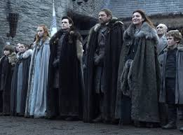

Stark Hanedanı George R.R. Martin tarafından yazılan kitap serisi Game of Thrones'daki hanedanlardan biridir.
Stark Hanedanı kuzeyin lordlarıdır, Brandon The Builder ise atalarıdır. Stark Hanedanı Brandon The Builder'ın soyundan gelmektedir.
Kitabın geçtiği güncel zamanda ise Stark Hanedanı'nın lordu Eddard Stark'tır. Eddard Stark'ın 3 meşru 1 gayrımeşru oğlu 2 ise kızı vardır. Karısı Tully Hanedanın'dan Catelyn Tully'dir
Ailenin Görselleri İçin TıklayınızBabası ise ondan önceki Stark lordu Rickard Stark'tır Annesi ise Lyarra Stark'tır. Eddard Stark'ın 2 erkek 1 ise kız kardeşi vardır.Abisi Brandon Stark küçük kardeşi Benjen Stark ablası da Lyanna Stark'tır.
Stark Hanedanı İlk İnsan ırkına dayanan köklü ve tarihi çok eskiye dayanan bit hanedandır.
Stark'lar 7 Krallık'tan biri olan Kuzey Krallığı'nın lordlarıdır.
Kuzey Krallığı Aegon The Conquerer, Balerion The Black Dread adlı ejderhası ve 2 kız kardeşi ile 7 Krallığı feth edip 1 krallık haline getirmeden önce kendine ait ayrı bir krallıktı.
O zamanlardan çok öncesine kadar bile Stark Hanedanı Kuzey Krallığı'nın lordlarıydı.
Güncelde yani Aegon'un fethinden sonra ise Stark Hanedanı lordları kral yerine Kuzey'in Gardiyanı olarak Kuzey'in korumasını sağlamıştır.
Game of Thrones evreninde saltanat sistemi olduğu için hanedan lordlarının en büyük oğulları onlardan sonraki hanedan lordu olur.
Her Eddard oğlunun Stark Hanedanı'nın sebmolü olan Alakurtları vardır.
Ailenin Fotoğrafı
Eddard Stark: Stark Hanedanı'nın babası ve lordudur. Aynı zamanda Kuzey'in Gardiyanı'dır.
Catelyn Stark: Aslen Tully Hanedanın'dan olan Stark Hanedanı'nın leydisi.

Robb Stark: Eddard Stark'ın en büyük oğludur, varisidir.
Brandon Stark: Eddard Stark'ın ikici en büyük oğludur. İsmi Eddard Strak'ın ölen abisinden gelir.
Rickon Stark: Eddard Stark'ın en küçük oğlu ve aynı zamanda çocularının en küçüğüdür.
Sansa Stark: Eddard Stark'ın en büyük kızıdır.
Arya Stark: Eddard Stark'ın en küçük kızıdır.
Jon Snow: Eddard Stark'ın gayrımeşru oğludur.
| İsim | Yaş | Öne Çıkan Tarafları |
|---|---|---|
| Eddard Stark | 36 | Kuzey'in Gardiyanı, Stark Hanedanı'nın nesilden nesile geçen kılıcı Ice'ın son taşıyıcısı, kısa bir süreliğine Kral'ın Eli'dir, Stark Hanedanı'nın Lordudur |
| Catelyn Stark | 33 | Aslen Tully Hanedanın'dandır, Tully Lordu'nun 2 kızından en büyüğüdür |
| Robb Stark | 14 | 15 yaşında savaş başlatmıştır, 16 yaşında Kuzey'deki Kral olmuştur |
| Brandon Stark | 10 | 10 yaşında sakat kalıp bacak aşşağısı felç olmuıştur, sorasında 3 gözlü kzugun olmuştur |
| Rickon Stark | 3 | Kurduyla arası iyidir, sessiz sakin bir çocuktur |
| Sansa Stark | 13 | Önce Kral Joffrey ile sözlenir sonra Tywin ile evelnip kaçtıktan sonra Bolton lordu Ramsey ile evlenir, serinin sonunda Kuzey'in Kraliçesi olur |
| Arya Stark | 11 | Çocukluğundan beri leydi değil savaşçı olmak ister, sonrasında çok iyi bi savaşçı ve Yüzsüz Adamlar üyesi olur |
| Jon Snow | 16 | Eddard'ın gayrımeşru oğludur, Gece Nöbetçileri'nin Lord Kumandanı olur, ölümden dödükten sonra Kuzey'in Kralı olur |